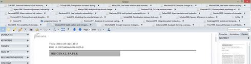

Loading Profile...
Loading Profile...


Rearranging Document Tabs
It's not terribly important, but it would be nice if it were possible to re-arrange tabs for open documents at the top of the screen. This is helpful if you're trying to switch back and forth between two documents, or if open documents share some kind of relationship to one another.
-
Just to refine, or add, to the idea... If I have a number of documents open then the document tabs may span more than a single row. This in itself is not a problem, but when I click on a document tab that is in a different row than my current position, the rows of tabs shift so that the newly selected document row is on the bottom. THIS IS VERY FRUSTRATING, BECAUSE THE POSITION OF THE TABS IS ALWAYS CHANGING!? This makes it EXTREMELY DIFFICULT to keep track of opened document locations. PLEASE FIX, sooner rather than later... Rearranging document tabs would also be extremely helpful :)
-
 1Even a "move left" and "move right button" upon right click on the tab (now it only shows pane options) would help a lot. Of course dynamic rearrangement, like in a browser, would help even more.
1Even a "move left" and "move right button" upon right click on the tab (now it only shows pane options) would help a lot. Of course dynamic rearrangement, like in a browser, would help even more. -

 I’m
frustrated
2I really wish I could either manually re-arrange the tabs or that they would just stay put when clicking between multiple open documents. I agree that having the tabs "jump around" is very frustrating.
I’m
frustrated
2I really wish I could either manually re-arrange the tabs or that they would just stay put when clicking between multiple open documents. I agree that having the tabs "jump around" is very frustrating. -
 2This is an opportunity to do more than allow rearranging tabs. After a while the tabs start eating into the main PDF viewer window height (see below). Rearranging them will only help to some extent.
2This is an opportunity to do more than allow rearranging tabs. After a while the tabs start eating into the main PDF viewer window height (see below). Rearranging them will only help to some extent.

The best solution I have seen to this tab explosion is the method employed by PDF-Xchange Viewer. Download it, open a whole bunch of PDF files, and you will see what I mean. Particularly the way these two buttons work:
.JPG)
http://www.tracker-software.com/produ...
Why not have two tab rows only:
1st row is for Qiqqa system tabs - Home, libraries, InCite, Expedition, Brainstorm.
2nd row is for documents, and functions in the same way as the example above.-
Jake over 5 years agoI'm only commenting to visibly support this suggestion.
-
-
I've noticed that when I've assigned colors to my pdfs, the colors appear in the tabs that those documents are in, which is nice.
However, the downside is that it has made it much more difficult to tell which tab I am actually in! The slight darkening of the tab is not obvious enough -- could you please also perhaps bold the text in the tab, or outline it darker, or even allow the user to customize what formatting might be applied to the tab that is currently being viewed? -
 I’m
frustrated without the ability to reorder the tabs.
All the other suggestions are nice, but... I really wish that you'd just add the ability to rearrange the tabs. This is so common in modern application today. It makes Qiqqa's GUI interface seem immature and kludge.
I’m
frustrated without the ability to reorder the tabs.
All the other suggestions are nice, but... I really wish that you'd just add the ability to rearrange the tabs. This is so common in modern application today. It makes Qiqqa's GUI interface seem immature and kludge.
Just add the ability to rearrange the tabs. It will help your users.

{kind=link}